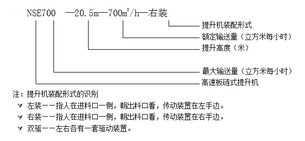
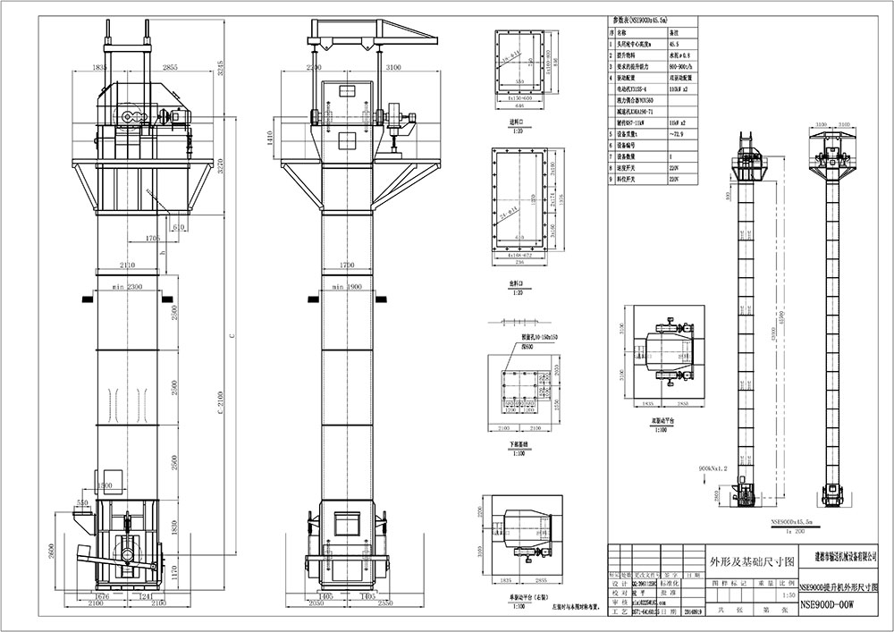

1.概述
1.1 NSE系列高速板链斗式提升机是我公司引进国外同类产品先进技术开发的一种新型垂直提升设备。在各工业国家，这类产品被广泛用于提升粉状和小颗粒状物料。
1.2 NSE系列板链斗式提升机共有十二种基本型号：NSE100、NSE200、NSE300、NSE400、NSE500、NSE600、NSE700、NSE800、NSE900、NSE1000、NSE1200、NSE1500。
2.特点
3.技术规范
4.型号说明
提升机的型号说明
例：

5.结构
NSE高速板链式提升机由运行部件、驱动装置、上部装置、中部机壳、下部装置组成。
5.1运行部件──由料斗和套筒滚子链组成。
5.2驱动装置──由DCYK或BE系列直交空心轴减速机、YOX液力偶合器、Y系列电机组成。对于大功率的，通常采用SEW减速机或西门子减速机。
5.3上部装置──由上部机壳、上罩、头轴装配等组成。
5.4中部机壳──分为带槽钢中间节、带门中间节、带轨中间节、标准中间节和非标中间节等。
5.5下部装置──由下部机壳、尾轴装配、张紧装置等组成。

版权所有 浙江省建德市输送机械设备有限公司
Copyright © 2010 www.cnjianchi.com All Rights Reserved 浙ICP证浙ICP备07504362号-1号
网站制作及维护：鼎易科技●领先的企业互联网应用方案提供商